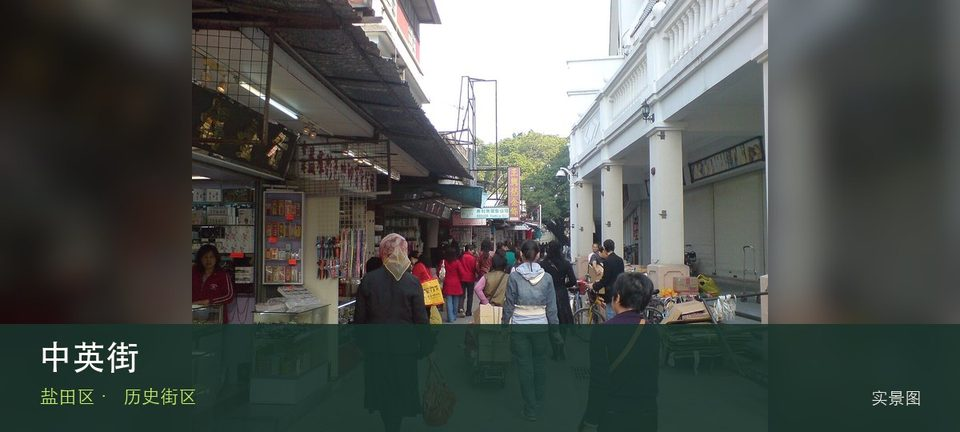

适合谁
适合建筑、地方史和社区观察者；参观时须尊重居民、宗教礼仪与生产秩序。

SHENZHEN GUIDE · 109
沙头角 · 历史街区
中英街位于沙头角边境特别管理区，界碑、骑楼商业与边境管理历史压缩在短街中，进入条件由证件和预约规则决定，不能按普通步行街理解。从中英街界碑转向边境管理历史时，地点的空间、历史或使用方式才会变得清楚。阅读这处地点要把中英街界碑与边境管理历史放回仍在使用的街巷或社区中，不把历史空间当成布景。先看公开区域，再按居民生活、礼仪和开放边界调整停留，不进入封闭建筑。
WHY GO
适合建筑、地方史和社区观察者；参观时须尊重居民、宗教礼仪与生产秩序。
先通过官方渠道完成证件或预约核对，按规定入口进入；先看界碑与历史展陈，再决定是否停留购物。
公共交通先到沙头角边境特别管理区片区，再以中英街公开参观入口为终点；多入口地点须按计划游线选择入口，并预先锁定返程站点。
自驾停在沙头角外围正规公共停车场，再步行到办证或核验入口；特别管理区规则优先，不在口岸道路等候。
10 月至次年 4 月步行较舒适；夏季避开正午，雨天留意石板、台阶和老建筑周边湿滑。
NEARBY IDEAS